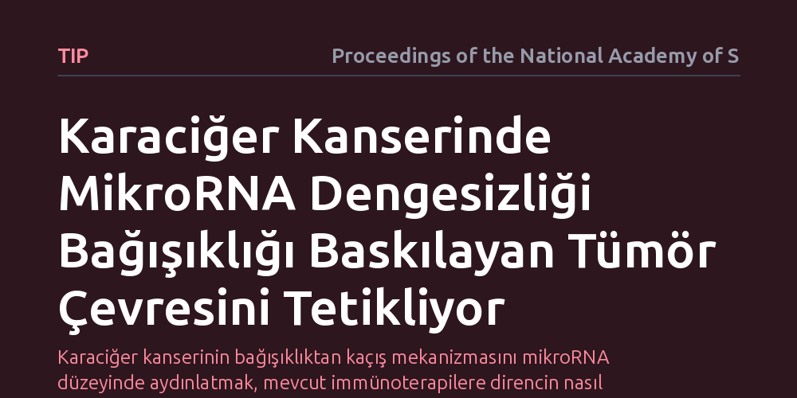

TIP · Proceedings of the National Academy of Sciences · 2026-10-09
Araştırmacılar, viral hepatitten karaciğer kanserine geçişte tümörün bağışıklıktan nasıl kaçtığını inceledi. MikroRNA moleküllerindeki değişimlerin sitotoksik T hücrelerini engelleyerek bağışıklığı baskılayan bir mikroçevre kurduğu saptandı.
Karaciğer kanserinin bağışıklıktan kaçış mekanizmasını mikroRNA düzeyinde aydınlatmak, mevcut immünoterapilere direncin nasıl kırılacağına dair yeni tedavi hedefleri sunuyor.

Hepatit B ve C virüsleri ya da siroz zemininde gelişen karaciğer kanseri (hepatosellüler karsinom), dünyada en sık görülen ve ölümcül seyreden kanser türlerinden biridir. Sağlıklı veya kronik iltihaplı karaciğer dokusunda virüslere ve anormal hücrelere saldıran çok sayıda sitotoksik T hücresi bulunurken, kanserleştikçe bu hücrelerin etkinliğini kaybetmesi uzun süredir yanıt aranan bir sorudur.
Tümörün geliştiği ortam yani tümör mikroçevresi, kanser hücrelerinin hayatta kalabilmesi için bağışıklık sistemini aktif biçimde baskılayan bir kalkan oluşturur. Bu savunma kalkanının hangi moleküler sinyallerle örüldüğünü anlamak, bağışıklık sistemini yeniden harekete geçirecek tedavilerin geliştirilmesi açısından kritik önem taşır.
Araştırmacılar, viral hepatit zemininde gelişen dokulardaki bağışıklık hücrelerinin dağılımını ve gen ifadesi değişimlerini inceledi. Özellikle hepatit kaynaklı karaciğer hastalıklarında bol miktarda bulunan sitotoksik T hücrelerinin kanserleşme sürecinde mikroçevreyle kurduğu etkileşimler izlendi.
Dokulardaki mikroRNA düzeyleri ve bunların bağışıklık kontrol noktaları üzerindeki hedefleri moleküler yöntemlerle haritalandı. Kanserleşmeye eşlik eden hücresel farklılaşma kaybı ile mikroçevredeki bağışıklık baskılayıcı sinyaller arasındaki korelasyonlar laboratuvar analizleriyle tespit edildi.
Çalışmanın bulguları, karaciğer kanserine giden süreçte mikroRNA profilinde köklü bir değişim meydana geldiğini gösteriyor. Karaciğerin normal kimliğini koruyan temel moleküllerin kaybı ve kanserle ilişkili mikroRNA'ların yükselişi, bağışıklığı baskılayan bir ortamın kurulmasında belirleyici rol oynuyor.
Normalde tümörü yok etmesi beklenen sitotoksik T hücreleri, bu mikroRNA yönlendirmeli sinyaller nedeniyle baskılanıyor. Tümör ortamında bağışıklık sistemini durduran fren mekanizmaları devreye girerek kanser hücrelerinin kontrolsüzce çoğalmasına zemin hazırlanıyor.
Bu mekanizmanın aydınlatılması, karaciğer kanserinde immünoterapilerin neden her hastada aynı başarıyı gösteremediğine ışık tutuyor. Tümör mikroçevresindeki baskılayıcı sinyal ağları kırılmadıkça, bağışıklık sistemini uyarmayı hedefleyen ilaçlar yetersiz kalabiliyor.
MikroRNA kaynaklı bu bağışıklık engelini hedefleyen moleküler yaklaşımlar, mevcut bağışıklık kontrol noktası inhibitörleriyle birlikte uygulandığında tümörün savunmasını aşabilecek yeni kombine tedavi yollarının önünü açabilir.